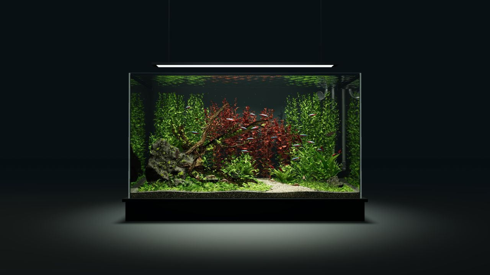

EXPLORE IN FULL 3D
A world worth slowing down for.
Rotate the tank. Follow a fish. Look beneath the surface.
Tap to start the interactive aquariumWHERE WILL YOUR CURIOSITY TAKE YOU?
Every part has a story.
Choose a close-up or tap an inhabitant inside the aquarium.
INSPIRED BY THE AQUASCAPE
Bring a little of this world home.
Start a shopping list with real catalog products. Bring it to the team to choose sizes, match equipment and plan your livestock.
The aquarium illustrates a planted setup. The products below are options to explore, not an exact parts list or a complete stocking plan. Catalog prices and availability are confirmed by the store.
Your inspiration. Our experience.
Bring your preview list to The Hidden Reef.
4501 New Falls Rd, Levittown, PA 19056